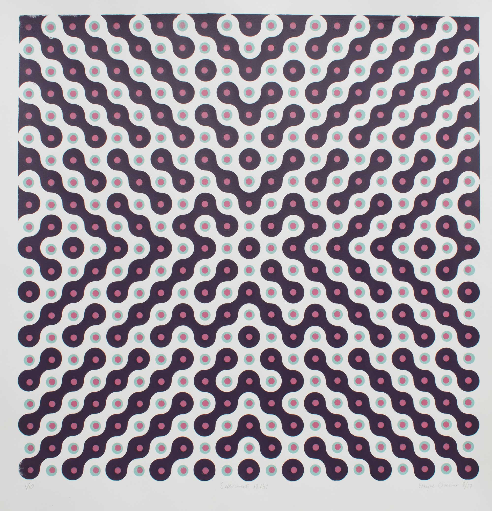
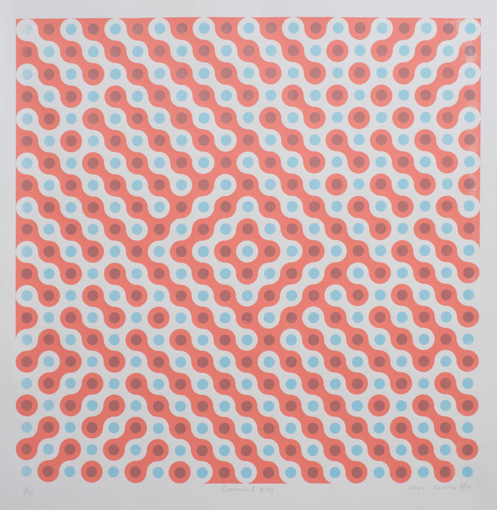
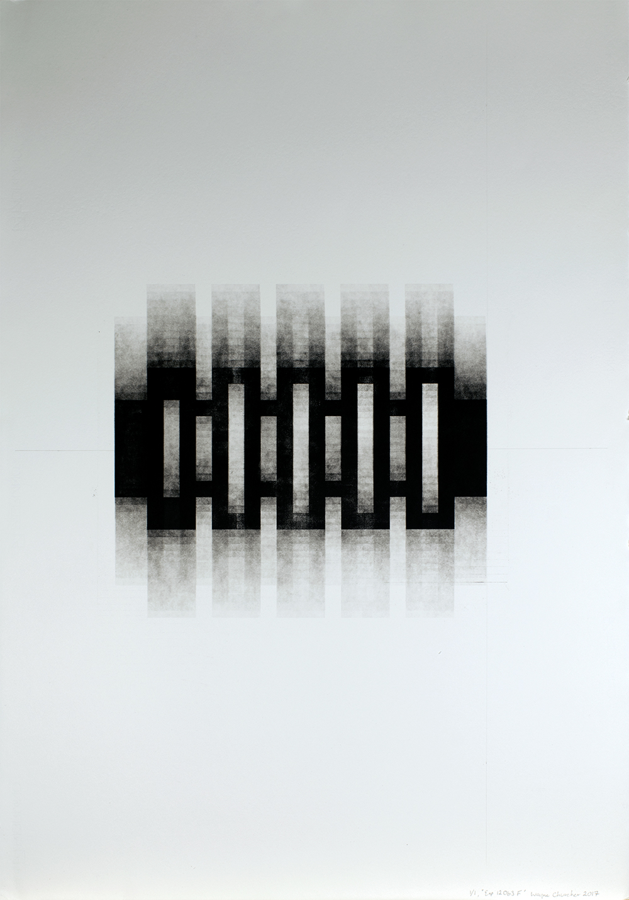
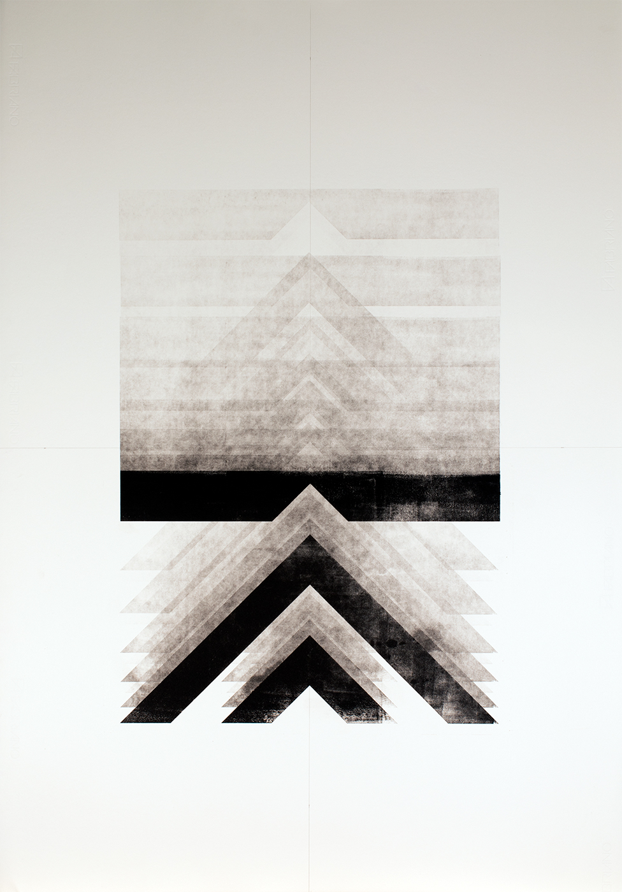
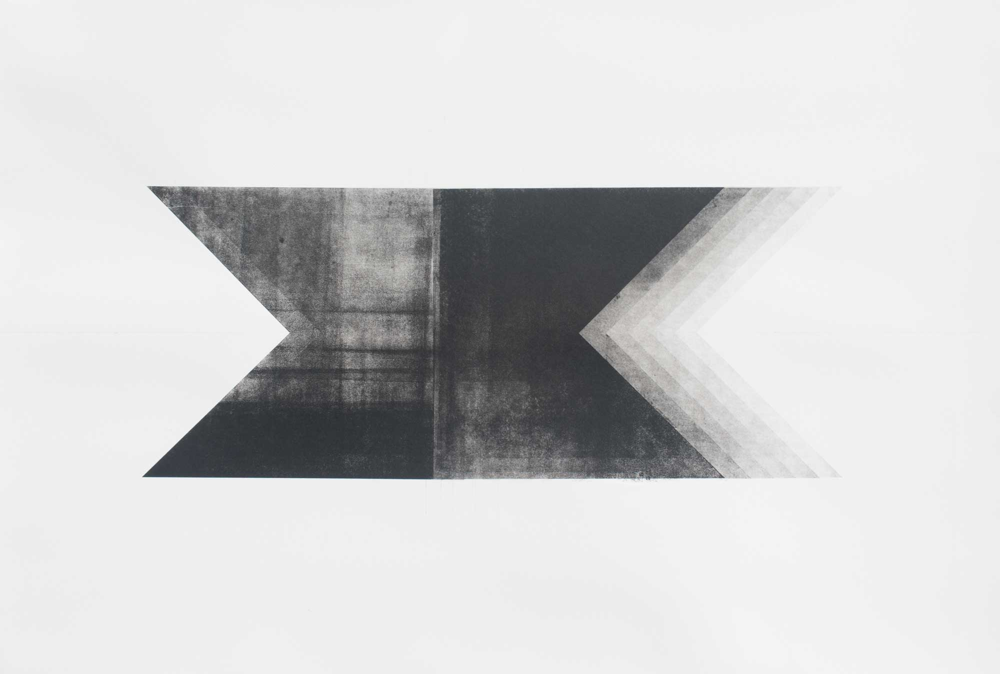
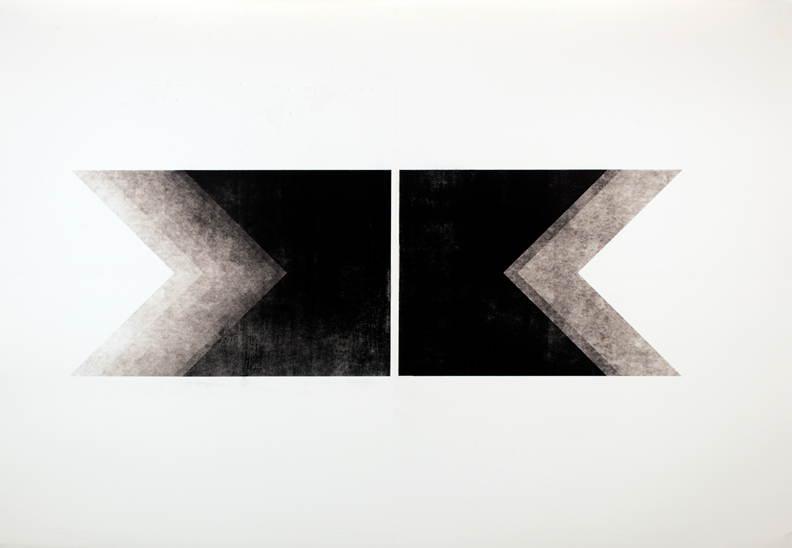
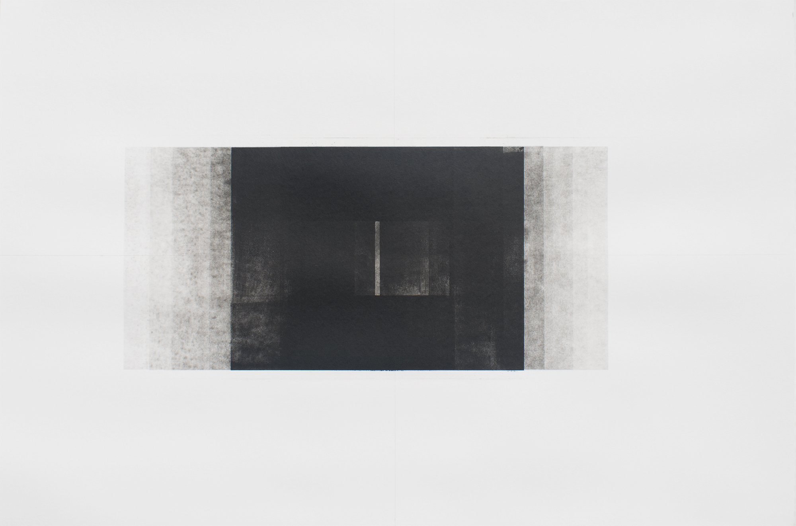
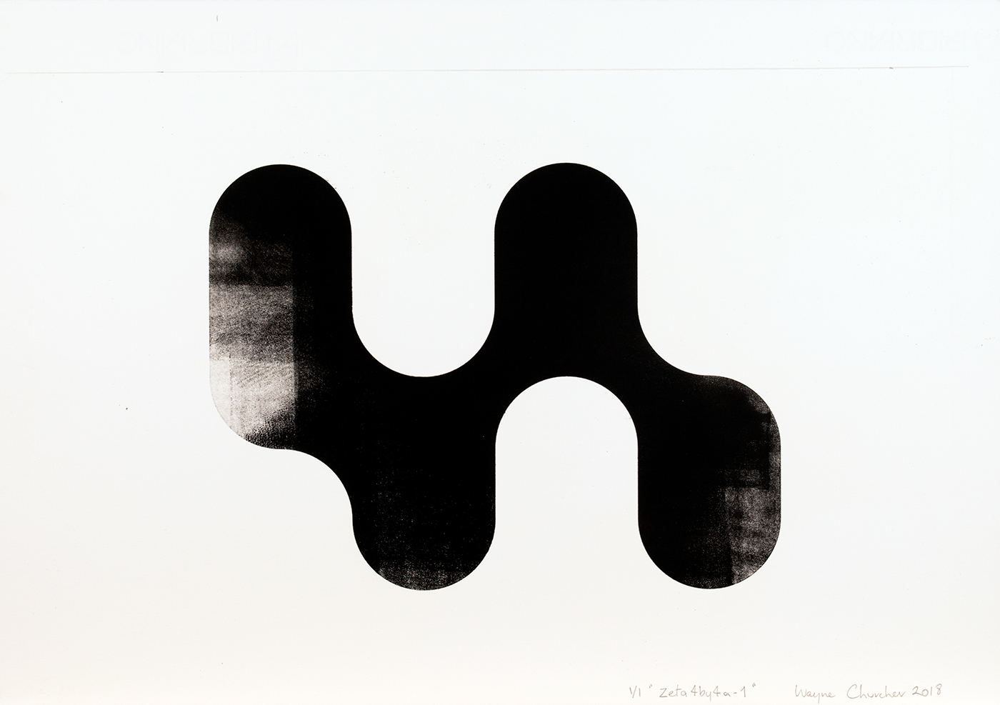

Since 2016 I have focused my attention on nonmimetic
forms, predominantly using a 'grid' as a
scaffold for investigations into human visual
perception.
According to Gestalt Psychology the figure/
ground phenomenon describes how we work out what
we are observing, naturally dividing what we see into
what is figure - a mark - and what is ground - the
figure's support. My intention is to maintain a suspense
between the two: this creates an 'activated field'.
Every work is initiated from one or more arrays of
shapes produced by purpose-written computer
programs. From here the reactions of the shapes to
each other and the processes of printmaking give rise to
the final artwork.
I have been exhibiting since 1999, having several solo
shows and many group exhibitions to the present time.
More recent group shows were:
- Finalist MAC National Printmaking Exhibition, First
Impressions III 2017
- Finalist in M13 Artspace Drawing Prize, Canberra,
ACT, Australia 2014
- Finalist in M13 Artspace Drawing Prize, Canberra,
ACT, Australia 2013
I have a BSc(Cell Biology) and a Diploma(Hons) Art
and Creativity. Currently I am near completion of an
Advanced Diploma (Art and Creativity).
Email - waynechurcher@gmail.com